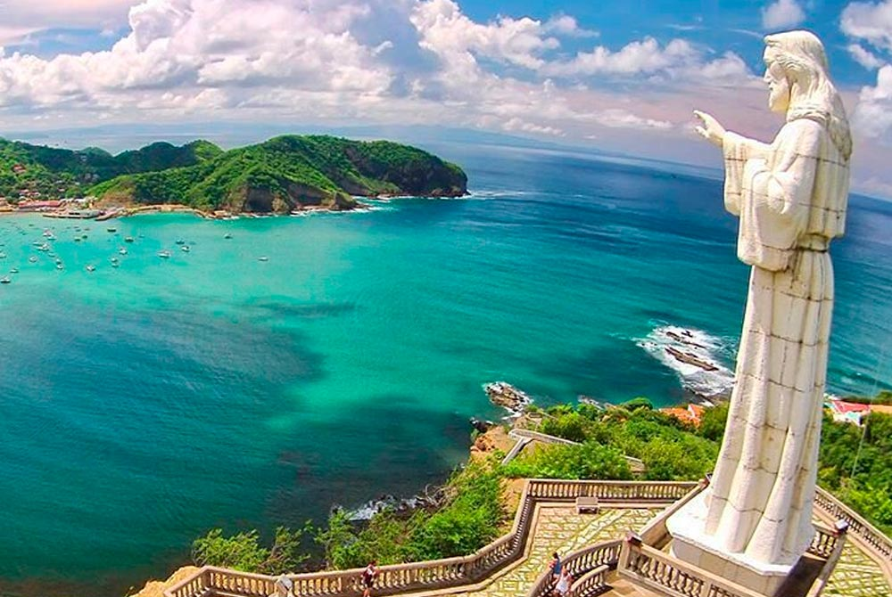
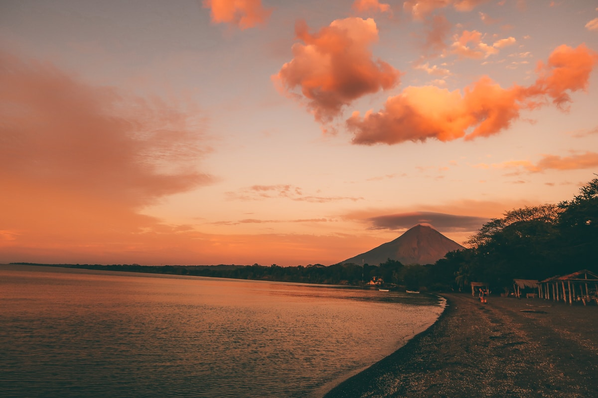
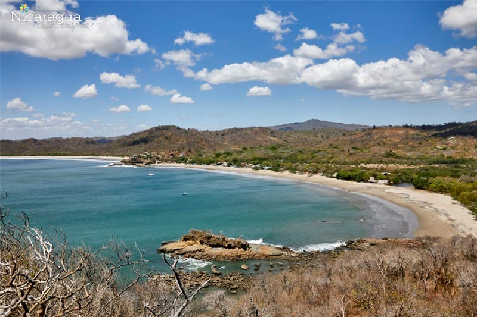

SAN JUAN DEL SUR
San Juan del Sur, paraíso de sol y playa ubicado 140 kilómetros de Managua, con arena blanca y toque tropical que le da al turista una estancia paradisiaca, a los alrededores se encuentran paredes de tierra que brindan la oportunidad para escalarlas y apreciar una vista panorámica desde las alturas.
Ver más
ISLA DE OMETEPE
La Isla de Ometepe es un gigantesco centro cultural indígena lleno de cerámica que comienza a tener mayor desarrollo en el período formativo, 1500 años a.c.; durante el cual comienza la difusión y los primeros intercambios característicos de la cerámica monocroma de color rojo y negro.
Ver más
PLAYA GIGANTE, TOLA
La playa Gigante un lugar para descansar, ideal para los amantes del surf donde podrás disfrutar del mar, hacer un recorrido por la costa, realizar actividades como pesca artesanal y deportiva, realizar tour en lancha, surfear, bucear y hacer senderismo y rapel. Es una de las mejores playas del país
Ver másHistoria de Rivas
Ubicado en la región del pacífico de Nicaragua está conformado por los municipios de Rivas, (Cabecera Departamental) Tola, Belén, Potosí, Buenos Aires, San Jorge, San Juan del Sur, Cárdenas, Altagracia y Moyogalpa estos últimos localizados en la Isla de Ometepe.
En esta tierras se asentaron tres grandes tribus Caribies, Chorotegas y Nicaraos; territorio del sabio Cacique Nicarao o Nicaragua, zona conocida durante la conquista como Valle de Nicaragua. Además de ser un corredor de tránsito para la colonización del país, fue puente de antiguas migraciones de grupos paleo indios y tribus precolombinas.
Rivas fue el primer territorio nicaragüense explotado por los colonizadores españoles iniciada por dos expediciones, la primera al mando del capitán Gil González Dávila en 1522 y la segunda en 1524 comandada por Francisco Hernández de Córdoba.
Anteriormente conocida como “Valle de Nicaragua», fue elevado al rango de «Villa de la Pura y Limpia Concepción de Rivas», en 1720, en honor al Capitán General Francisco Rodríguez de Rivas, presidente de la Audiencia y Capitanía General de Guatemala, en tiempos de la colonia.